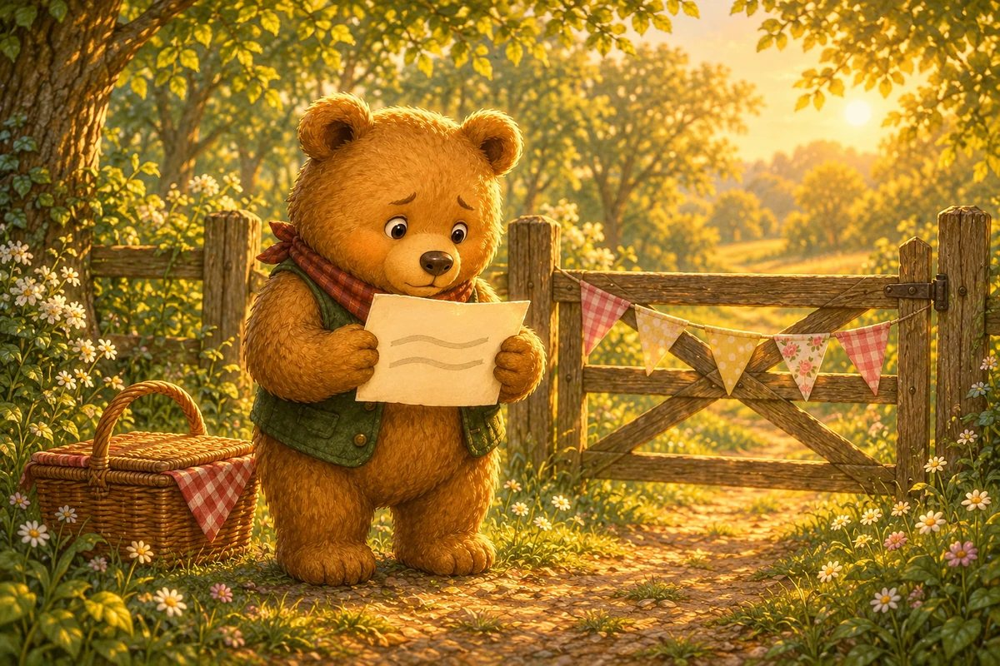
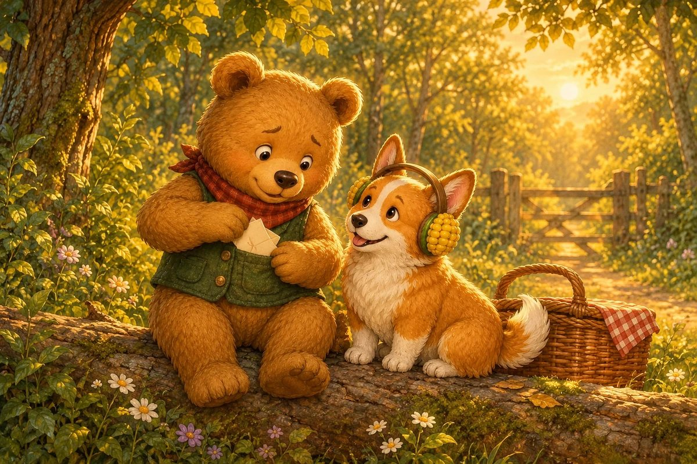
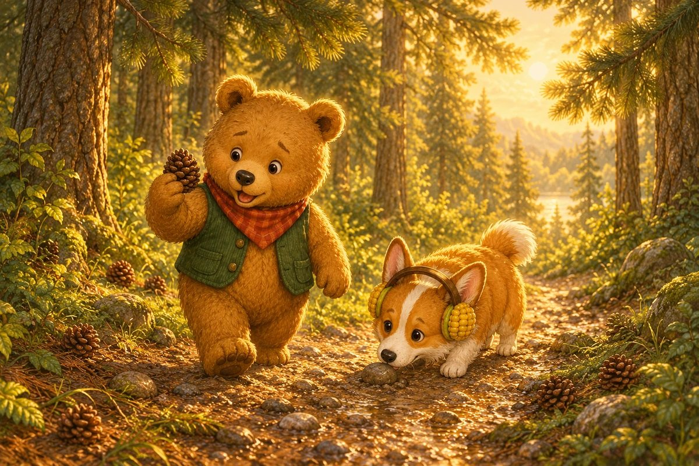
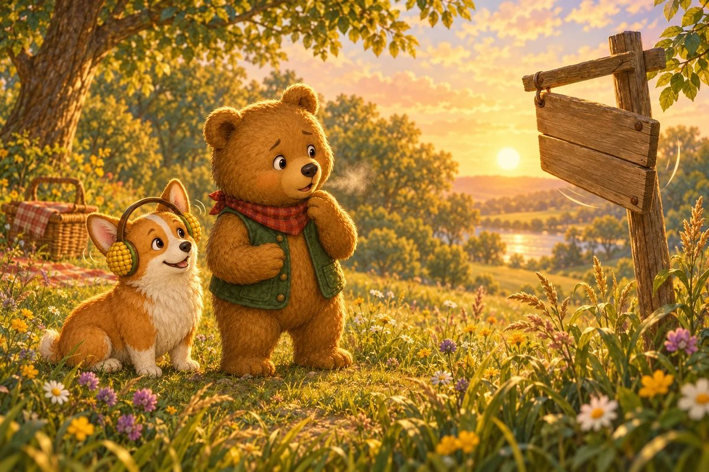
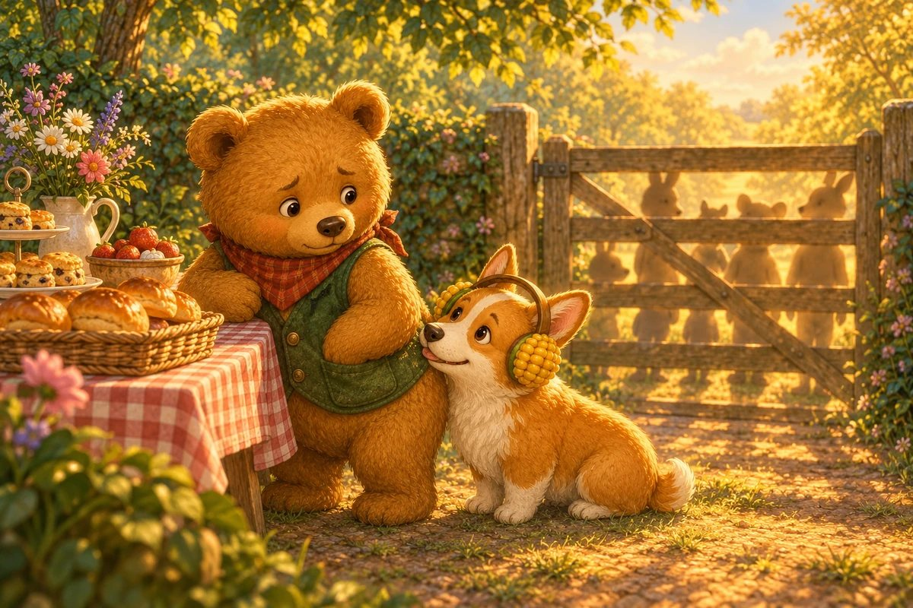
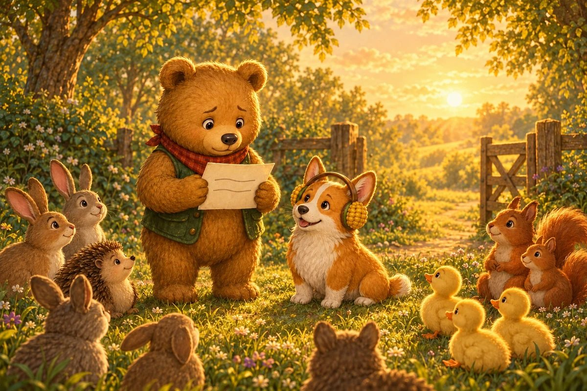
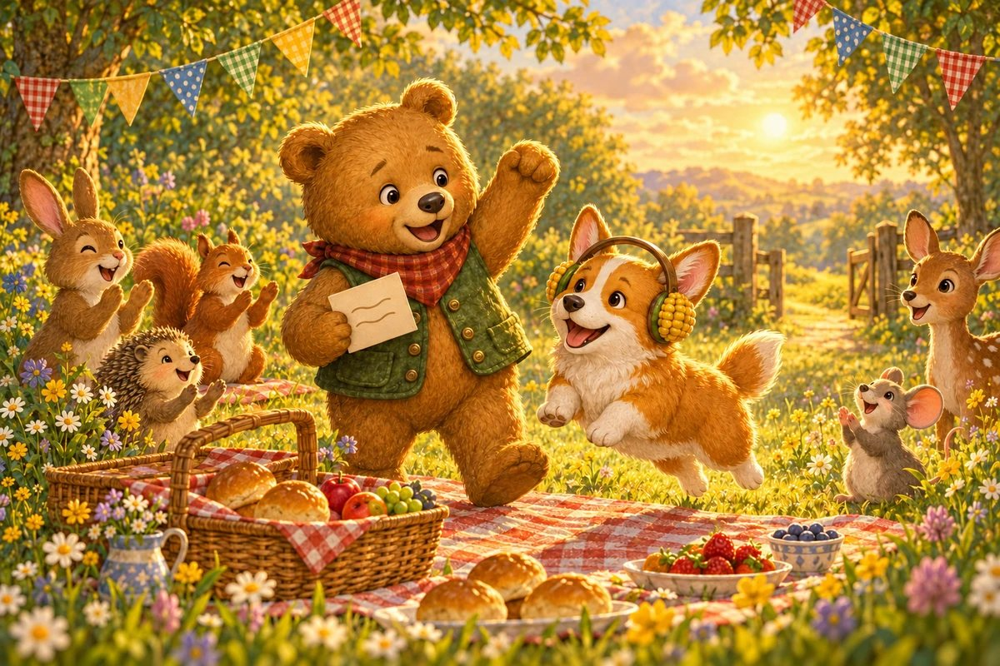

10 printed pages · 2.1 MB · A4 or US Letter. Download PDF · Open PDF to printOpens in a new tab. Use the PDF viewer's Print control. To use less ink, read online and choose only the questions on page 10 in Print.

Page 1 of 8 · The Welcome Card
Ted-E-Bear has one important job at the First Picnic: read the welcome card when the gate opens. He practised beside his bed. He practised beside the bath. But now the card trembles in his paws, and every word looks much bigger than it did at home.

Page 2 of 8 · A Bark-Pop Beside Him
Corgi-on-the-Cob sits beside Ted without telling him to hurry. His tail gives one soft bark-pop against the basket. “I cannot carry the words for you,” Corgi says, “but I can listen for the first sound.” Ted folds the card and puts it safely in his pocket.

Page 3 of 8 · P Is for Path
They walk the quiet path before the guests arrive. Pinecones lie under the pines, and pebbles press into the mud. “Pinecone. Pine. Pebble. Path,” Ted says. Four words begin with the same little puff of air. He tucks the P sound into an imaginary pocket.
Page 4 of 8 · L Is for Listen
At the bridge, leaves lift and land while the creek makes a low, laughing sound. Ted listens. “Leaf. Lift. Land. Low.” The L sound feels smooth and light on his tongue. Into the other pocket it goes. The card no longer feels quite so heavy.

Page 5 of 8 · The Sound That Hides
A breeze flips the picnic sign, and Ted spots a word beginning with H. He opens his mouth, but the sound is only warm air. “It is hiding,” he says. Corgi shakes his head. “Not hiding. H is a soft breath, as at the start of hello. Quiet sounds still count.” Ted pockets the gentle breath.

Page 6 of 8 · The Gate Begins to Creak
Footsteps gather beyond the gate. Ted’s tummy flips. He could slip behind the bun table and nobody would be angry. Then Corgi touches the pocket holding P, and Ted touches the pocket holding L. He has not learned every word. He has learned how to begin one.

Page 7 of 8 · One Sound, Then the Next
Ted unfolds the card. The first word is WELCOME. “W,” he whispers. Wind. Warm. Welcome. His voice wobbles on the second word, so he stops, breathes, and begins it again. Nobody laughs. Corgi’s ears point towards every sound as if each one matters—because it does.

Page 8 of 8 · A Voice Big Enough
The gate swings open. Ted reads the final line slowly, with pauses in all the right places and one pause that was not planned. Then the picnic erupts in cheers. His voice was never too small. It was exactly big enough to carry one sound, then another, all the way to the end.
The end · Great listening
Ted has promised to read the picnic welcome—but every word suddenly feels enormous. What might help him begin?
Talk about the answer
A whole sentence can begin with one small sound. Listen for the first sound with Ted.
SnackPack ABC & Alphabet has more read-together stories, letter tracing and first-sound games.